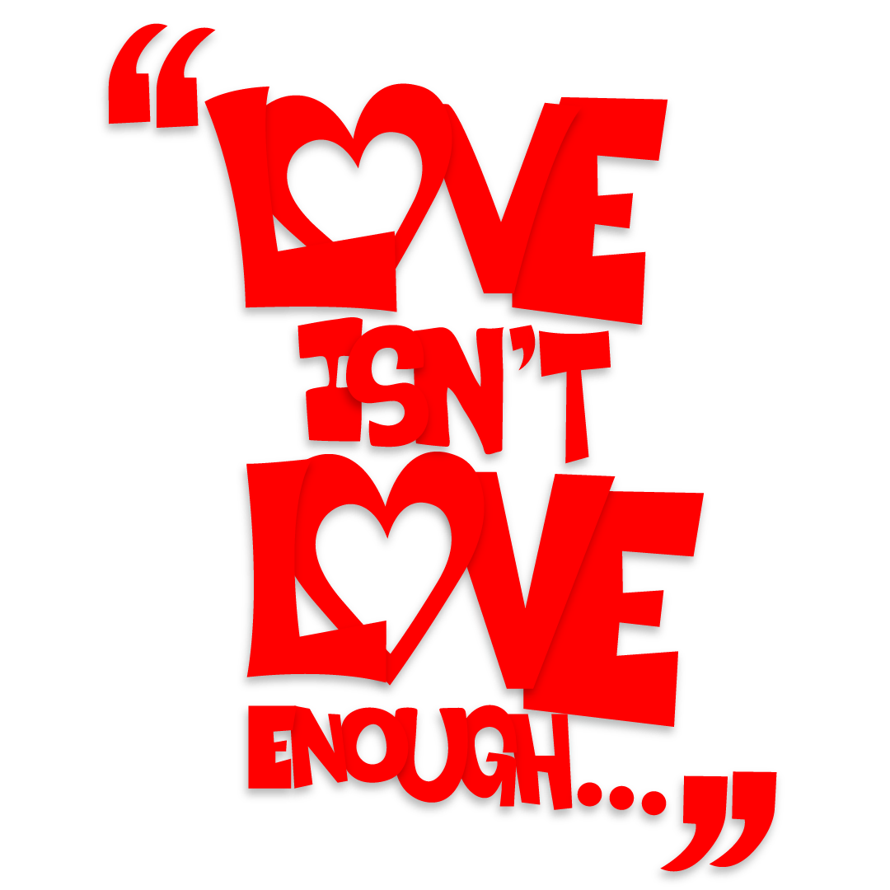
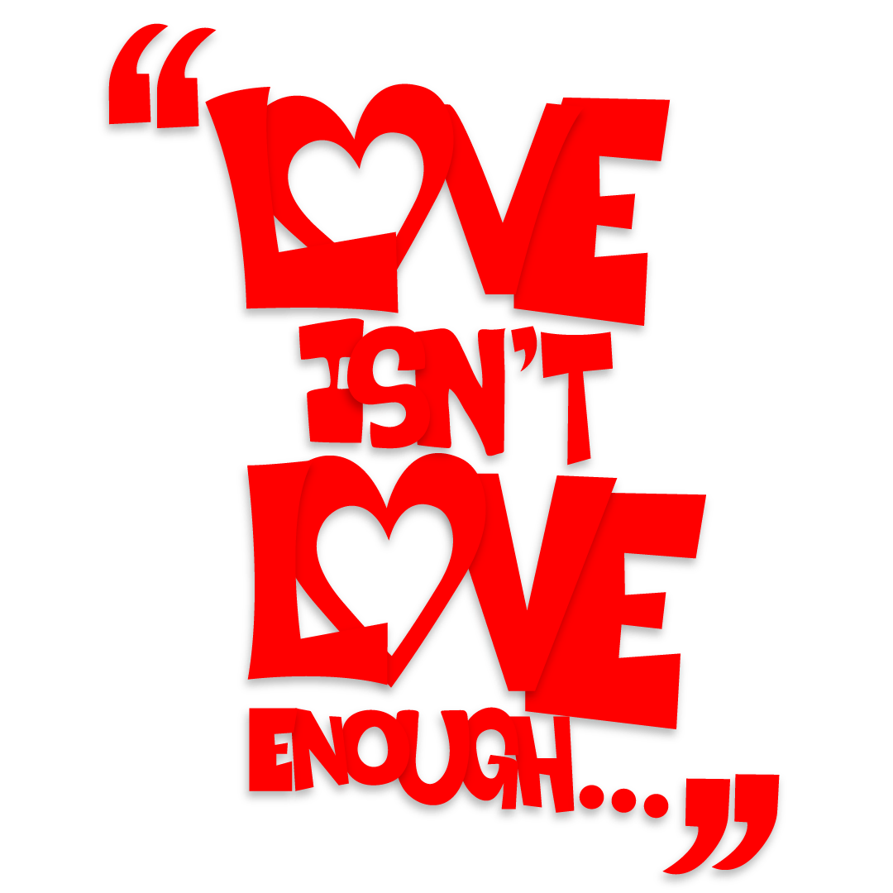
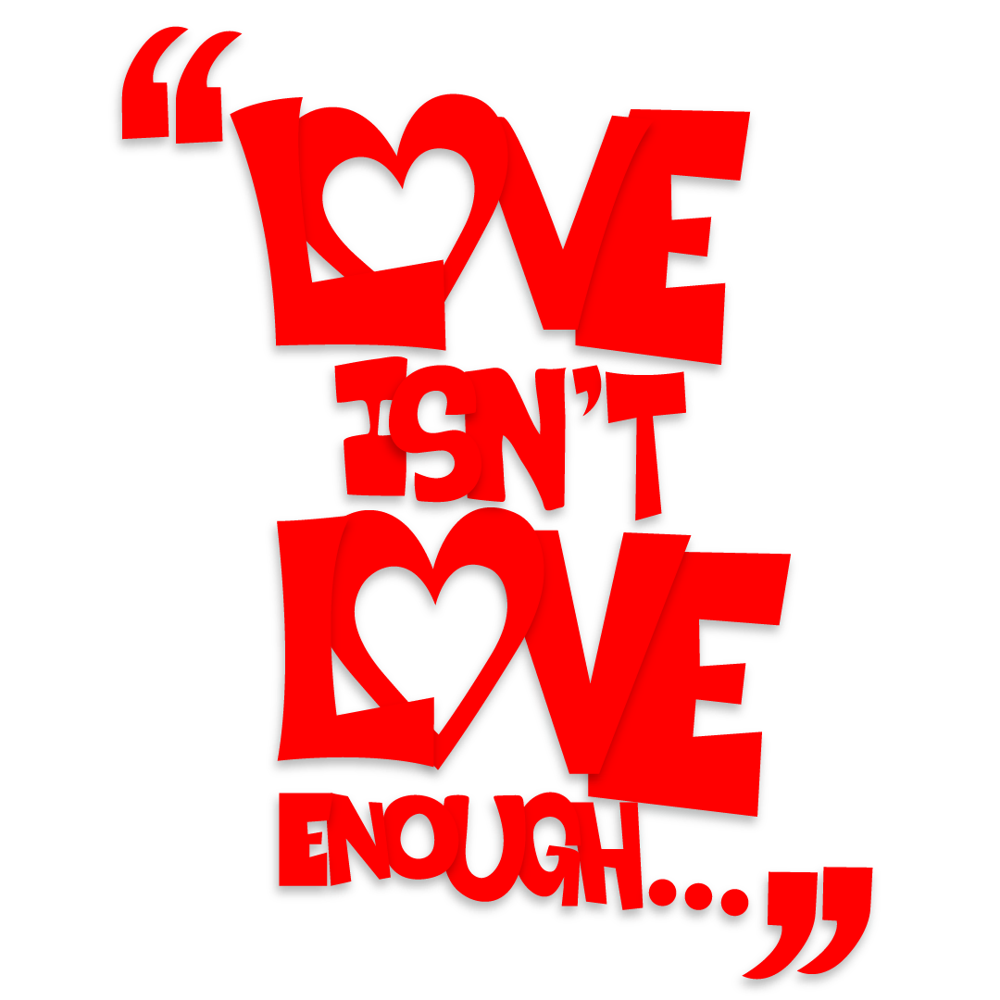

TYPOGRAPHY.
A selection of Lettering Art and typographic experiments that are a result of pushing my own technical boundaries and skill.

 



A selection of Lettering Art and typographic experiments that are a result of pushing my own technical boundaries and skill.

Inspired by London’s club music scene, I re-branded a beloved queer nightclub in Norwich as a reminder of how significant these spaces are to the queer community.